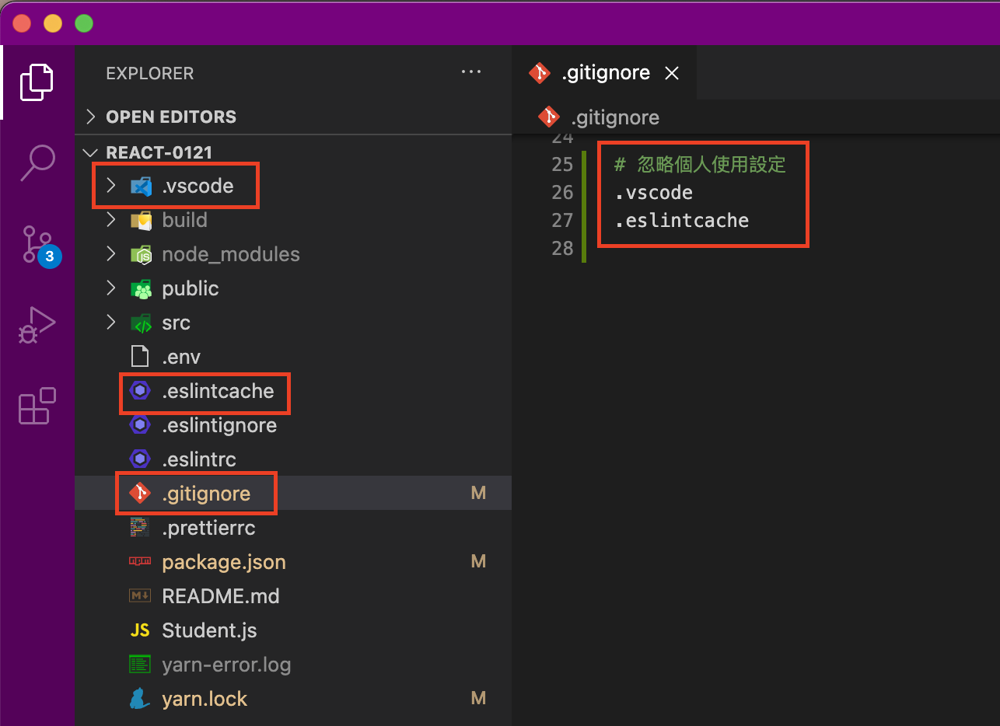

我們在 React 專案資料夾裡會出現一些個人的環境設定或者使用紀錄檔，例如 .vscode 與 .eslintcache ，這些檔案如果在 Github Repo 創立的時候沒有設定 ignore ，可能會在大家上傳與下載的時候不斷地產生衝突需要 merge （因為大家的視窗顏色現在可能因為 VSCode 的 Window Colors 這個套件而各自有不同的設定。 .eslintcache 則是每次使用都會自動產生不同的檔案。）

# 忽略個人使用設定
.vscode
.eslintcache